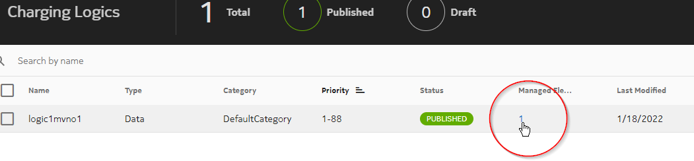
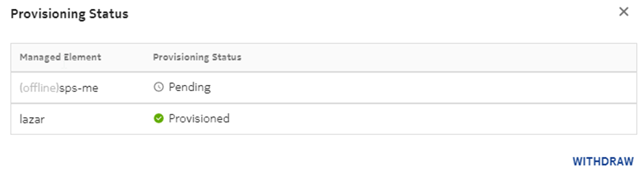

NCC can display provisioning status information per ME. This display is available for all the service model entities.
See the following example. In this, when a user clicks on the number under Managed Element, a pop-up window opens that displays the list of MEs where it is published.
 Note:
Note:Provisioning status when ME is
offlineNote:
The provisioning operations for service data when the target ME is in OFFLINE state are considered successful, but displayed in the SM as Pending. The pending provisioning operations are automatically completed (provisioned) when the ME moves to ONLINE state later.
The provisioning status of the MEs is
displayed as shown in the following image:

Note:- This functionality is not applicable to subscriber data. An offline ME always has another ME to host the same subscriber partition that can accept subscriber data provisioning transactions.
- If multiple provisioning operations that affect the same configuration entity are attempted, and a subsequent operation is dependent on the outcome of the first operation, then the subsequent operation fails. That is, two updates of the same entity can be successful (the last update is applied), but an attempt to withdraw (unprovision) an entity, and then delete it can fail. This is because when the delete operation is attempted, the withdraw is not yet completed.